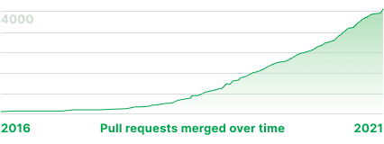

The vibrant community that makes all happen
-
1565 pull requests merged in 2020
During 2020, in SkyWalking’s main repository alone, 1565 pull requests from 235 poeple were merged in, signaling strong community growth and vitality.
 -
500 contributors milestone
SkyWalking has over 500 contributors based on GitHub repository statistics. This is a remarkable achievement for the whole diverse community.